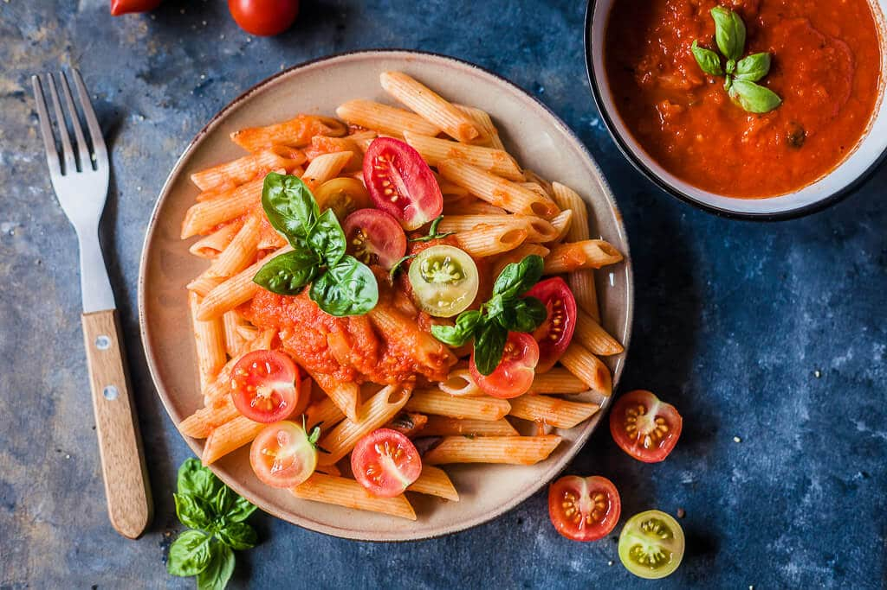

Pasta in tomato sauce

Ingredients:
- 200 grams penne pasta
- 1,5 cup tomato sauce
- fresh basil leaves
- herry tomatoes to top
Instructions:
- Get pre-made tomato sauce in the market.
- Bring a pot of water to a boil. Season with salt, then add pasta and cook according package instructions. When cooked al dente, drain (save 0,5 cup pasta water) and return the pasta to the pot. Add tomato sauce and a bit of pasta water and heat it up, stirring and mixing the sauce with the pasta.
- Serve topped with chopped basil leaves and some cherry tomatoes. Optionally, add some grated parmesan cheese or a vegan alternative.
Back